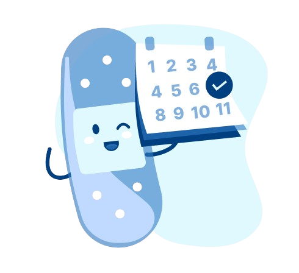

<div class="container">
  <div class="sidebar" [ngClass]="{'closed': isSidebarClosed}">
    <div class="sidebar-header">
      
      <button class="hamburger-menu-toggle" (click)="toggleSidebar()">☰</button>
    </div>
    <ul class="sidebar-menu">
      <li class="sidebar-menu-item"
          *ngFor="let item of menuItems"
          [routerLink]="[item.RouterLink]"
          routerLinkActive="active"
          (click)="selectMenuItem(item)">
        <a class="navbar__link">
          <div class="sidebar-menu-content">
            
          </div>
          <span>{{ item.label }}</span>
        </a>
      </li>
    </ul>
    <div class="extra-content">
      
      <app-button class="register-button" value="Próximas citas"></app-button>
      <div (click)="logout()">
        <div class="navbar__linkk">
          <div class="sidebar-menu-content">
            
          </div>
          <span>Cerrar sesión</span>
        </div>
      </div>
    </div>
  </div>

  <div class="container-cards">
  </div>
  <div *ngIf="showProgress" class="loading-overlay">
    <app-feedback-progess></app-feedback-progess>
  </div>
</div>
